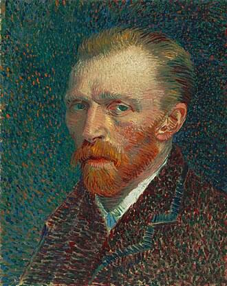

Por que ele me inspira?

Vincent van Gogh foi um pintor pós-impressionista holandês e uma das figuras mais famosas da história da arte. Ele me inspira pela forma como conseguia pintar mesmo com sua depressão severa.
Citações Marcantes
Através das cartas escritas para seu irmão, Theo, sabemos um pouco sobre sua personalidade. Aqui estão algumas frases que nos fazem refletir:
Se você ouve uma voz dentro de você dizendo "você não pode pintar", então pinte, de qualquer jeito, e essa voz será silenciada.
Fonte: Biografia e correspondências (Wikipédia)
Ele também tinha uma visão incrível sobre o esforço contínuo, afirmando que Grandes coisas não se fazem por impulso, mas por uma série de pequenas coisas juntas.
- Cartas a Theo.
Saiba mais
Para explorar as obras e a história deste grande artista, visite o link abaixo:
Página de Vincent van Gogh na Wikipédia